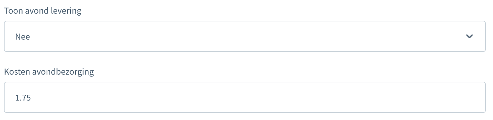
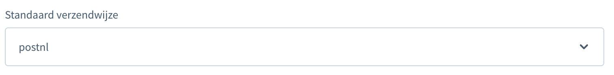

Inleiding
Creëer en download snel verzendetiketten vanuit jouw Shopware.
1. Installatie
1.1 Nieuwe installatie
Je kan de plugin op 2 manieren installeren. Via de store of handmatig, hieronder vind je de uitleg voor beide. Wij bevelen het aan om de installatie via de store te doen.
Let op! De plugin is compatible vanaf versie 6.3.0.0 van shopware.
Via de store installeren
Shopware heeft voor installaties via de store een goede handleiding. Deze kan je hier vinden: https://docs.shopware.com/en/shopware-6-en/extensions/myextensions#installing-extensions
Handmatige installatie
De plugin kan je gemakkelijk installeren. Download eerst de plugin bestanden van github. Na het downloaden open je jouw Shopware omgeving en ga je naar plug-ins. Dit vind je onder instellingen -> Systeem -> Plug-ins.
Zodra je op plug-ins hebt geklikt zie je een knop "Plug-in uploaden". Klik hier op en upload hier het mapje dat je eerder gedownload hebt van github.
Activeer "PostNL" als een verzendmethode via MyParcel -> Verzendmethodes, klik op de drie puntjes bij "PostNL" en kies de instellingen die jij wilt. Vervolgens kan je de verzendmethode actieveren en opslaan.
In de verkoop kanalen kan je PostNL activeren door op de dropdown onder verzending te klikken. Selecteer "PostNL" in het betalingen en verzendmethodes scherm. Hier kan je ook PostNL als standaard verzendmethode instellen.
Als je klaar bent met het instellen, kan je de cache herladen: Instellingen -> Systeem -> Caches & Indexes -> Verwijder en actieveer
1.2 Updaten bestaande installatie
Om de plug-in te updaten, zal je op dit moment nog alles moeten de-installeren. Hierna kan je de nieuwe versie van github uploaden, zoals hierboven uitgelegd.
2. Configuratie
API Instellingen
Om zendingen in het juiste account terecht te laten komen, zal je de API key uit je MyParcel-account moeten invullen. Als je ingelogd bent in jouw MyParcel account, kun je deze vinden bij het -teken > Shopinstellingen > Algemeen. Het kan zijn dat je de API key nog niet ziet, maar deze eerst nog moet 'genereren'. Klik dan op Genereer API-key en kopieer de API-key.
Toon pickup punten bij afrekenen
Als je PostNL locaties wilt tonen in jouw checkout, kan je deze instelling op "Ja" zetten.
Standaard afleveringsperiode
Bij deze instelling kan je aangeven wanneer je standaard de pakket wilt leveren. Je hebt hier de keuze tussen een normale, ochtend of avondlevering.
Standaard handtekening bij bezorging
Als je deze optie aanzet, zal er standaard een handtekening bij levering gevraagd worden door de bezorger.
Standaard aflevering bij buren
Deze optie zet je aan als je de pakketten niet bij de buren van de consument geleverd mogen worden.
Stuur standaard het pakket terug naar de afzender als de ontvanger niet thuis is (Retour bij geen gehoor)
Wanneer een pakket na de eerste leverpoging direct retour moet komen, dan kan je deze optie aanzetten.
De klant welke voor het pakket tekent dient minstens 18 jaar te zijn
Als je producten verkoopt waarbij een leeftijdscheck nodig is, kan je deze optie aanzetten. Deze optie zal op alle orders een 18+ check zetten.
Standaard verpakkingssoort
Met standaard verpakkingssoort, kan je aangeven wat voor pakkettype je voor alle orders wilt gebruiken. Je hebt de keuze uit pakket, brievenbus pakket, brief(ongefrankeerd) en digitale postzegel.

Toon ochtend levering
Met deze optie, kan je de consument in de checkout de keuze geven voor een ochtend levering. Onder de optie kan je de extra kosten in bij jouw klant in rekening brengen.
Toon avond levering
Als je jouw klanten de optie wilt geven om een avond levering te kiezen in de checkout, kan je deze optie aanzetten. Onder deze instelling kan je de extra kosten doorberekenen aan jouw klanten.
Standaard verzendwijze
De standaard verzendwijze van Shopware waar je gebruik van wilt maken. In bijna alle gevallen zal dit op PostNL moeten staan.
Label instellingen
In de label instellingen kan je aangeven welk formaat je wilt printen. Je hebt hier de keuze uit A4 en A6.
3. Gebruik plugin
3.1 Aanmaken van één verzendlabel
Wanneer je één label aan wilt maken klik je op de puntjes achter de order. Er klapt een menu uit, in dat menu klik je op "Verzending aanmaken". Zodra je dat doet zal er een scherm omhoog komen. In dat scherm kan je aangeven wat voor label je wilt maken. Je kan de instellingen zo laten staan of veranderen. Als je klaar bent klik je nog een keer op "Verzending aanmaken" om het label te creëren.
3.2 Aanmaken meerdere verzendlabels
Als je van meerdere orders tegelijk een label wilt maken gaat dat ongeveer hetzelfde. Eerst selecteer je de checkboxes aan de voorkant en daarna klik je bovenaan de pagina op "Verzendingen aanmaken". Hierna zal hetzelfde scherm als hierboven naar voren komen en kan je eventueel nog een aanpassing maken aan de labels. Zodra alles goed staat kan je de labels maken met "Verzending aanmaken".
3.3 Checkout
In de configuratie heb je twee instellingen voor de checkout aan kunnen zetten (ochtend en avondlevering). Hieronder kan je een voorbeeld zien hoe het in een standaard omgeving eruit zal zien.